并行程序设计思想
从金属板温度求解的读写依赖与矩阵乘法的输出所有权出发，设计任务分配、同步交接与邻域通信；用同一组数据推导前缀和、稳定筛选和 MoE 路由，比较完整时间与结果质量。
学完这一讲，你能
- 用金属板温度求解判断哪些更新能并行，区分相同迭代与相同稳态
- 为输出分配唯一拥有者，用同步与缓冲生命周期解释什么时候可以继续
- 用具体任务表比较静态、动态分配与任务粒度，解释长尾和调度开销
- 逐步估算分区的消息数与字节，分析通信重叠和局部性的收益边界
- 用计数、前缀和与位置映射组织筛选和 MoE 路由，以完整时间和结果质量判断方案
依赖决定并行
硬件会执行，程序还要把工作组织好
第一讲问“并行能快多少”，第二讲问“硬件怎样执行”。现在要决定：什么能一起算、交给谁算、结果放在哪里？
以混合专家模型（MoE，Mixture of Experts）为例：路由器为每个 token 选择一个专家网络，专家再处理对应的向量。token 是分词后的基本单位，不一定等于一个汉字或一个单词；专家也不等于一张 GPU。
| 相同硬件、相同模型，仍会遇到的问题 | 本讲要解决的设计 |
|---|---|
| 有的专家忙，有的专家闲 | 工作怎样分配，怎样避免长尾 |
| 多个 token 同时进入一个专家的输入区 | 怎样为每项结果确定唯一位置 |
| 分组让矩阵乘法更高效，却增加搬运 | 怎样比较完整过程的时间 |
先求一块金属板的稳态温度、看清依赖，再安排 16 项任务，最后把 8 个 token 的分组与返回过程完整走通。
设计路线：先合法，再分工，最后算总账
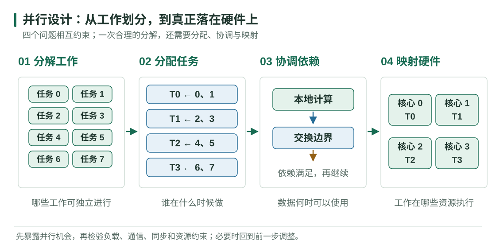
| 设计决定 | 具体要回答什么 |
|---|---|
| 分解 | 哪些计算之间没有必须遵守的先后关系？ |
| 分配 | 哪些任务交给同一个执行者，工作是否均衡？ |
| 协调 | 谁产生数据，谁读取，什么时候可以继续？ |
| 映射 | 工作放在哪个核或设备，数据是否在附近？ |
本讲把执行任务的人或线程抽象为 worker（工作者）。64 个任务可以由 8 个 worker 逐批执行；“任务有多少”和“同时能执行多少”是两件事。
实际问题：求金属板的稳态温度
一块均匀的薄金属板，左边持续保持 100°C，其余三边保持 0°C，没有内部热源，忽略板面散热。我们想知道：最终稳定下来后，板内各处是多少度？
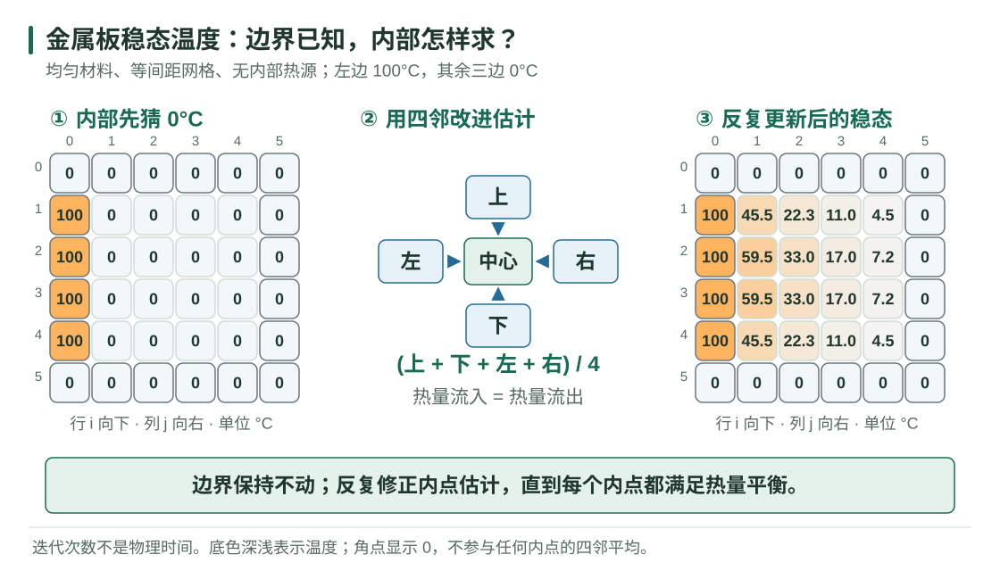
把板划成等间距网格。稳态时，每个内点流入和流出的热量平衡，因此它的温度等于四个邻居的平均值：
表示第 i 行、第 j 列的温度。邻居也未知，不能只代入一次就算完；可以先把内部都猜成 0°C，再反复用邻居改进估计。图中 6×6 包含固定外圈，只有内部 4×4 需要求解。
中心与四邻构成五点模板（five-point stencil）；更新时读四邻、写中心。这里的轮数是求解迭代次数，不是现实经过的秒数。
同一块金属板，三种读值规则
从内部全为 0°C 开始，观察 C=(2,1)：它左边是固定的 100°C 边界，上、下、右邻初始都为 0°C。先区分计算时读哪一版数据，以及哪些点安排在一起执行。
左侧边界持续保持 100°C，其余三边保持 0°C；内部先猜 0°C。行 i 向下，列 j 向右。格内数字均为 °C，橙色越深温度越高。
6×6 含边界，内部 4×4；均匀材料、等间距、无内部热源。迭代轮数不是物理时间，平衡差不是解误差。角点显示为 0，不参与任何内点的四邻平均。切至 100 轮可比较各规则接近的稳态；这里计算温度，不测 GPU 速度。
| 算法与执行安排 | 第一轮 C=(2,1) 读到什么 | C 的新估计 |
|---|---|---|
| 雅可比（Jacobi）：所有点只读上一轮 | 左 100；上、下、右都是 0 | 25°C |
| 高斯–赛德尔：逐行执行 | 左 100；上已变成 25，下、右还是 0 | 31.25°C |
| 高斯–赛德尔：波前并行 | 与逐行相同：左 100、上 25、下 0、右 0 | 31.25°C |
| 高斯–赛德尔：红黑两色 | 左 100；上、下都已变成 25，右仍是 0 | 37.5°C |
高斯–赛德尔迭代（Gauss–Seidel）会利用已经更新的邻点值。这里的逐行和波前遵守相同的“上、左新；下、右旧”规则：逐行一个点接一个点做，波前把互不依赖的点放在同一批。两者每一轮结果相同，波前是它的并行执行安排。
红黑高斯–赛德尔则改变更新顺序：第一色 i+j 为偶数，第二色为奇数；同色内并行，第一色全部完成后，才开始第二色。因此它每轮的中间结果可以不同。
这些数都是当前估计，不是三个不同的物理答案。切到 100 轮，C 都接近 59.47°C。在这个固定边界的模型中，它们趋向同一个离散稳态，但沿途的估计与所需轮数可以不同。
双缓冲：一份只读，一份写入
要实现雅可比迭代，用两块不同的存储：old 保存上一轮的温度估计，next 接收本轮。每个任务只拥有一个输出点。
对每个内点 (i,j)，并行执行：
next[i,j] = (old[i-1,j] + old[i+1,j]
+ old[i,j-1] + old[i,j+1]) / 4
等待本轮所有点完成
交换 old 与 next 的角色，进入下一轮
多个任务可以共同读取 old，却不会写到同一个 next[i,j]。左边的 100°C 和其余三边的 0°C，在两块缓冲里都要预先设好，并始终不更新。
快 worker 仍不能独自进入下一轮：它要读取的邻居输出可能还没写完。交换角色只交换引用，不需要把整张网格复制一遍。
写不同格子，就一定能并行吗？
仍看这块金属板，但先只让两个相邻任务工作：A 更新 (1,1)，B 更新右边的 (1,2)。边界不变，其余内点暂时保持初始的 0°C。
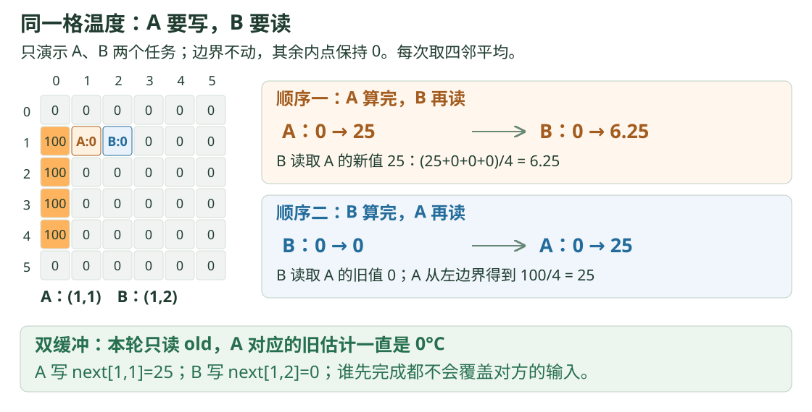
A 从左边界得到 25°C。如果 B 随后读取 A 的新值，就得到 6.25°C；如果 B 先读取 A 的旧值 0，就得到 0°C。虽然写不同格子，执行顺序仍会影响结果。
| 同一位置上的访问 | 能否放在同一个无同步阶段 |
|---|---|
| 两个任务都只读 | 可以共享同一份旧估计 |
| 两个任务都要写 | 需要唯一写者，或明确的同步与合并 |
| 一个写、另一个读 | 必须保证读到算法要求的那一版 |
Q01 · 讨论
改用 old/next 后，B 在本轮还要等 A 算完吗？为什么进入下一轮又必须等待？
Q01
本轮不用等：B 只读 old，其中 A 对应格子始终是 0，因此写出 next[1,2]=0；A 向 next[1,1] 写25，不会覆盖 B 的输入。进入下一轮后，B 要读取这一轮的邻居新值，才需要等待相应写入完成。这里仅演示两个任务，完整网格仍按上一页的轮末交接执行。
并行的上限：总工作与最长依赖链
相邻格子的读写告诉我们“谁要等谁”。把这些必要的先后关系画出来，才能进一步回答：人手再多，最快能多早完成？
把任务画成有向无环图（DAG，Directed Acyclic Graph）：节点是工作，箭头表示“前一项完成，后一项才能开始”。
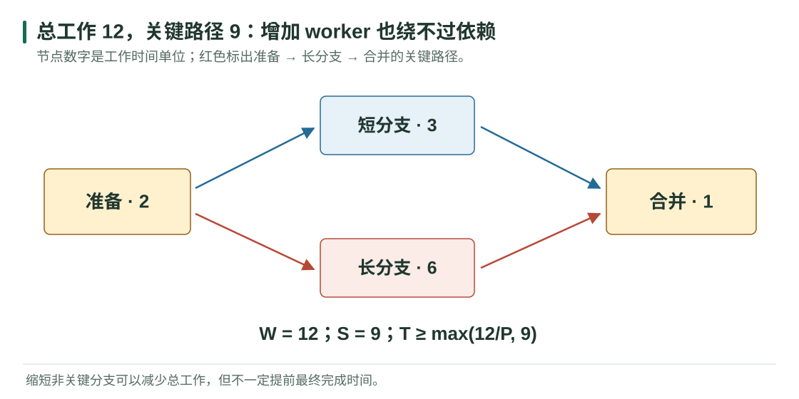
先做 2，再同时做 3 与 6，最后合并用 1。这里数字是同一把尺子下的时间单位。
| 要算的量 | 本例 | 它限制什么 |
|---|---|---|
| 总工作 | 2 + 3 + 6 + 1 = 12 | P 个同速 worker 至少要 |
| 关键路径长度 （span） | 2 + 6 + 1 = 9 | 再多 worker 也至少要 9 |
因此 。两个 worker 已能在 9 完成；再加 worker，短分支结束后仍要等长分支。
Q02 · 讨论
把短分支从 3 优化到 1，为什么总工作减少了，两个或更多 worker 的完成时间却不变？
Q02
关键路径仍是 2→6→1，总时间仍为 9。减少工作可能省资源，但在这个资源已足够的例子里，要缩短完成时间，应优化或合法拆分关键路径上的任务。只有一个 worker 时，总工作从 12 降到 10，就会直接变快。
波前：沿斜线分批更新温度
回到完整金属板。逐行高斯–赛德尔迭代让 C=(2,1) 第一轮得到 31.25°C。如果要保留每一轮的结果，能否把逐点串行改成并行？
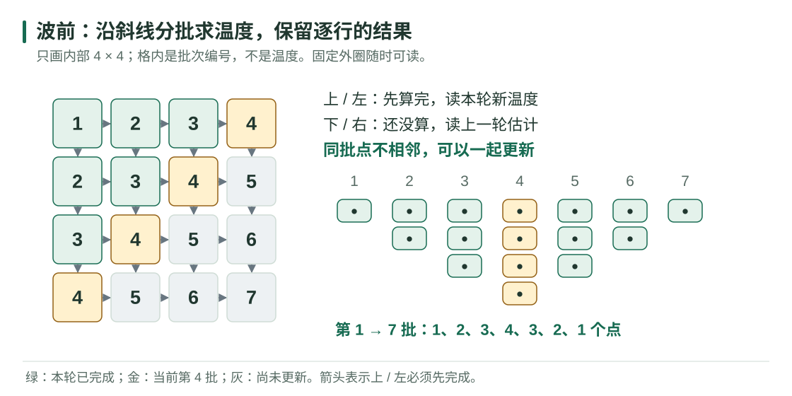
点 (i,j) 需要上、左的新估计，以及下、右的旧估计。按 i+j 从小到大分批：
- 上、左在更早的批次，已经写好。
- 下、右在更晚的批次，还没覆盖旧值。
- 同批点互不读取对方，可以一起更新；一批完成，再推进下一批。
例如 (1,2) 和 (2,1) 都只需等待 (1,1) 算完，就能同时做。这样的推进方式叫波前（wavefront）：它是这里高斯–赛德尔迭代的并行执行安排，改变执行日程，保留逐行求解器的读值版本。
数一遍波前：有 16 个点，却只有 7 个阶段
沿用网格里的 4×4 内点。这里的“一批”指同一轮迭代中，可以同时更新的一组内点。按 i+j 分批，每一批的点数为：
| 批次 | 1 | 2 | 3 | 4 | 5 | 6 | 7 |
|---|---|---|---|---|---|---|---|
| 可同时更新的点 | 1 | 2 | 3 | 4 | 3 | 2 | 1 |
第一批只有左上角内点 (1,1)；随后第二批更新 (1,2) 和 (2,1)，沿斜线逐批推进；最后一批（第7批）只有右下角内点 (4,4)。
第7批完成，才算整张网格完成一轮更新。 如果还没达到温度平衡，就开始下一轮，再从左上角推进。
每点用 1 单位时间、资源足够时，总工作 W=16，完成时间至少 S=7。即使有 4 个 worker，开头和结尾也填不满。
推广到 n×n 个内点：本轮从左上角 (1,1) 所在的第一批 i+j=2，推进到右下角 (n,n) 所在的最后一批 i+j=2n，一共 2n−1 批。
4×4 时平均并行度是 16/7≈2.29，而不是最宽一层的 4。把多个点捆成大任务会减少派发次数，也可能让更多本来独立的点顺序等待。
红黑：换个顺序求同一个稳态
波前保留逐行算法，每轮仍有 7 批。可是温度问题真正要求的是最终满足热量平衡，不必每一轮都与逐行算法完全一样。
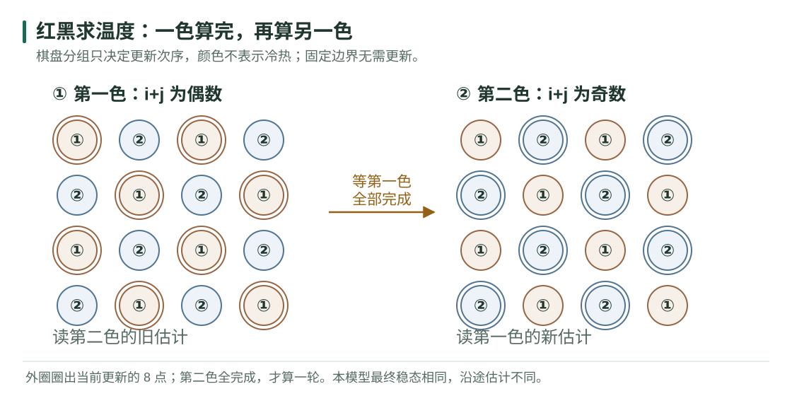
将内点按棋盘分组：第一色 i+j 为偶数，第二色为奇数。四邻一定异色，所以同色内点可以一起更新；固定边界始终可读。
第一色全部算完 → 同步 → 第二色全部算完 → 同步 → 下一轮。 先偶数色是本例约定，交换两色顺序会影响中间估计。
| 波前高斯–赛德尔 | 红黑高斯–赛德尔 |
|---|---|
| 上、左读新值；下、右读旧值 | 第一色读第二色旧值；第二色读第一色新值 |
| 一轮 7 批，最宽一批 4 点 | 一轮 2 批，每批 8 点 |
| 与逐行每轮结果一致 | 每轮结果可以不同，但本例收敛到同一个稳态 |
潜在优势：每批工作更多，需要依次交接的阶段更少。 对 n×n 个内点，波前要推进 2n−1 批，红黑只有两色、每色约一半网格，更容易同时给很多线程分配工作。
仍用 4×4 内点和 4 个同速 worker，假设每点耗时 1、忽略开销：波前需 7 个时间单位；红黑每色 8 点，各分两批执行，两色共 4 个时间单位。两色并不意味着任何资源条件下都只用 2 个时间单位。
实际用途就在稳态导热这类网格方程的求解中。 数值计算库 hypre 的一个多重网格求解器就提供红黑高斯–赛德尔作为可选更新步骤。多重网格让粗、细网格配合修正误差，红黑更新是其中一个部件。
真正更快还要同时考虑每轮计算、同步与访存的成本，以及达到同一精度的轮数；并行机会更多，并不保证完整求解更快。
分组的依据是邻居读取关系
金属板的四邻关系让红黑分组成立。做一个简短反查：如果另一个模型还要读取四个对角邻居，原来的分组是否仍然安全？
深色：当前批次
浅绿：已完成；白色：尚未执行。
同批点才能一起更新；边界固定，图中只画内点。
只读四邻时，上、左批次较早，下、右较晚，保留逐行温度更新的读值版本。
这里只检查同批不同点间的读写依赖，不计算温度或测量时间。对角读取是假想的另一种邻域，不是前面金属板模型必需的步骤。
切到“再读四个对角点”，同批冲突会标红：对角相邻点可能同色，也可能在同一条反对角线上。
按行、列奇偶性分成四组，可以把这些相邻点分开；组内并行，组间仍要等待。这只是检查分组方法的变体，前面金属板的四邻方程保持不变。
比较达到同一精度的总成本
前面比较了不同更新安排，现在用同一个标准验收：每个内点离四邻平均还差多少？ 沿用第4页的金属板，看雅可比第一轮结束后的温度表。
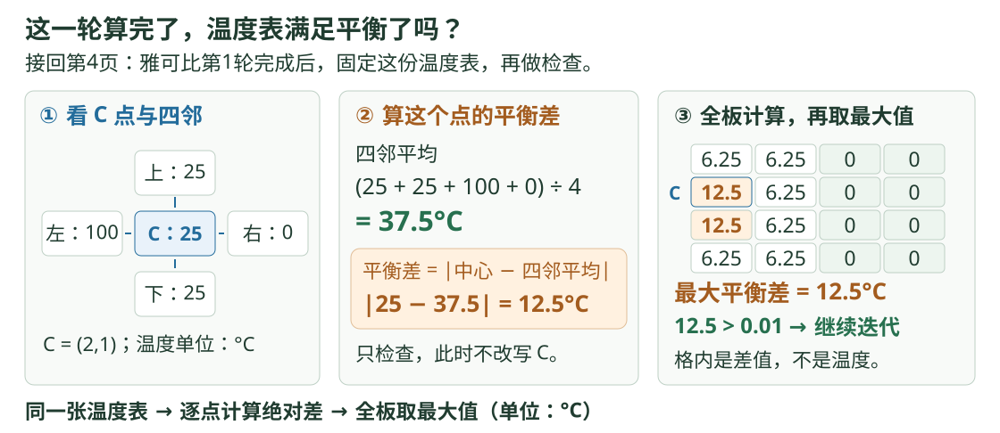
每个点的平衡差，就是它的当前温度与当前四邻平均的绝对差；全部内点中最大的一个，叫作最大平衡差。它衡量平衡方程满足得多好，也称最大绝对残差，不直接等于温度解的误差。
各方法都在完整一轮结束后检查这项指标，并统一以最大平衡差 ≤ 0.01°C为达标标准：
| 同样的边界与初始估计 | 首次达到要求的完整轮数 | 一轮的并行安排 |
|---|---|---|
| 雅可比 | 31 | 16 个内点可并行，轮末交接 |
| 逐行高斯–赛德尔 / 波前 | 16 / 16 | 逐行 16 点依次做；波前 7 批 |
| 红黑高斯–赛德尔 | 18 | 2 批，每批 8 点 |
以上轮数由这张 6×6 网格实际计算得到，不是 GPU 性能测量。红黑虽然批次更少，本例却比波前多迭代两轮。
初始化时间为 ，轮数为 K；每轮平均时间 要包含计算、访存、同步与质量检查。初始化相同时，比较的是 18×红黑每轮时间 与 16×波前每轮时间；红黑每轮小于波前的 16/18≈88.9%，总时间才会更短。
输出所有权与交接
回看矩阵乘法：切输出，还是切求和
网格说明了“先确定读哪一版”。现在进一步看谁写哪一处结果：同一个计算任务，切法不同，协调成本也不同。
回到课程中同一组小矩阵：，其中 ，。
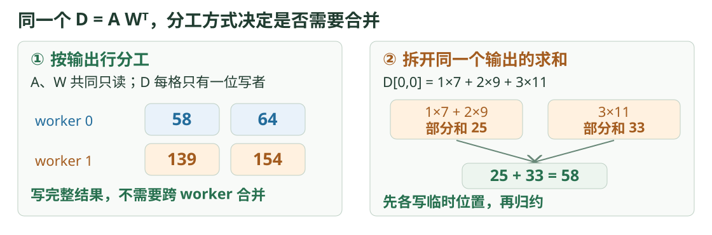
左图把完整输出交给唯一 worker；右图让两个 worker 为同一个输出计算部分和，就要先各自保存，再合并。直接同时做普通 D[0,0] += ... 会发生共享写冲突。
切分计算的维度，决定了是否需要额外的合并。
先局部累加，再合并：把频繁共享写移到边界
把多个数合成一个结果，称为归约（reduction）。GEMM 要合并部分和，网格也要统计本轮总变化 。如果每更新一个点都去改同一个 d，所有 worker 会争写它。这里的 d 用于观察估计变化；是否达到稳态，仍用前面的最大平衡差验收。
每个 worker 先在自己的 local 中累加
完成负责的网格点后，把 local 写入自己的部分结果槽 partial[自己的编号]
所有 worker 完成后，再合并 partial
| 方案 | N 个点、P 个 worker 的共享写入 |
|---|---|
| 每点更新同一个总和 | N 次竞争同一位置，需要原子等同步 |
| 私有累加，最后归约 | P 次写各自槽位，再合并 P 项 |
例如 N=4096、P=16，就把 4096 次热点更新换成 16 个局部结果和一次合并。合并仍有成本；浮点加法顺序也可能改变，须按第一讲的误差要求验收。
同步工具：分别保护什么
上一页把频繁共享写入改成了“先算局部结果，再合并”。剩下的协调有两类：多人共同修改时，怎样不冲突？读取别人结果时，怎样完成交接？
| 工具 | 保护的对象 | 直观例子 |
|---|---|---|
| 原子读改写（atomic read-modify-write，如原子加） | 一次不可分割的更新 | 多人给同一个计数器加一，不丢增量 |
| 互斥锁（mutex） | 一段需要互斥执行的操作 | 修改一条任务记录的多个字段，避免别人同时修改 |
| 屏障（barrier） | 一组参与者之间的阶段交接 | 大家都写完本轮网格，才能开始使用完整结果 |
例如，两人都读到计数器为 0，再各自写回 1，最终只增加了 1。“读取是原子的、写入是原子的”不代表整个加一过程不可分割；需要保护的是读取、修改、写回这一整次更新。
屏障只能协调阶段，不能补救阶段内部已经发生的竞争。 先让输出尽量由唯一写者负责，再根据剩下的协调需求选择工具；即使没有多人写同一处，结果交接仍然需要同步。
同步不仅防止冲突，还负责交接结果
接着看上一页的第二类需求。一个 worker 计算局部和，写入自己的 result；主线程负责收集结果。这里只有一个写者，但主线程仍不能想读就读。
交接必须保证两件事：对方已经写完；这些写入对接收者可见。 “可见”指同步关系保证接收者随后能正确读取已交付的结果，不只是从时间上猜测对方已经做完。
以一次性任务为例，join 表示等待指定线程结束：
worker 算出局部和 → 写入 result → 线程结束
↓ join 等待完成
主线程： join 返回 → 读取 result
成功的 join 不只是等待：它还建立线程结束前的写入与接收者后续读取之间的同步关系。这种有保证的先后关系称为先行发生关系（happens-before）。
睡 1 秒再读不能代替交接：对方可能没做完，而且等待时长本身不建立同步关系。若 worker 不结束，而是还要继续下一轮计算，就需要像屏障这样的阶段交接。
回到金属板：用屏障完成每轮交接
现在把第15页的屏障用到熟悉的金属板上。这里采用雅可比双缓冲：读 old，把新温度写入 next。同一批 worker 算完一轮后还要继续工作，因此等待的是阶段完成，而不是像 join 那样等待线程结束。
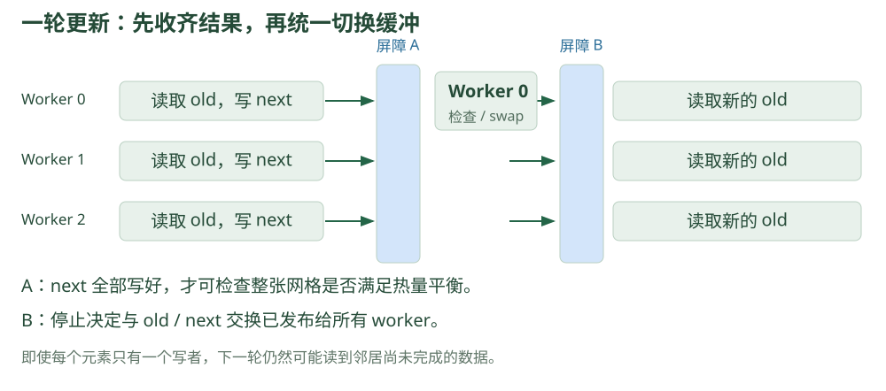
图中的 worker 0 兼任协调者：收集局部结果，在完整的 next 上检查最大平衡差、决定是否停止，并交换 old/next 的角色。因此，这个安排有两次交接：
| 交接 | 等什么完成 | 通过后才能做什么 |
|---|---|---|
| 屏障 A：本轮数据交齐 | 所有 worker 读完旧值、写完新温度和局部结果 | worker 0 才能汇总并检查整块板，避免混用尚未写齐的数据 |
| 屏障 B：统一决定交齐 | worker 0 完成停止判断与缓冲角色交换 | 所有人按同一决定退出，或读取新的 old 进入下一轮 |
只有 A 还不够：大家算完时，worker 0 可能还没检查完、没交换好缓冲，其他人不能抢先开始下一轮。这里的两次屏障服务于“集中检查、集中交换”的安排，并不意味着所有迭代算法都必须使用两个屏障。
缓冲名会交换，物理存储不会凭空增加
上一页要求交换前等大家读完。把角色名拿开，看真实存储，就能理解这次等待保护了什么。
把两块真实存储叫 A、B，第 0、1、2 轮网格分别记为 ，上标表示轮次。old/next 只是当前角色的名字。
交换后，B 成为下一轮的输入 old，A 改作输出 next；交换的是角色，不是复制数据。
如果某个慢 worker 还在读 A 中的 ，快 worker 就提前往 A 写 ，它会读到混合的两代数据。等待保护的不只是新结果，还包括旧数据的最后一次使用。
用一段阶段协议核对：有没有人提前进入下一轮
现在把“数据齐了”“角色定了”“旧缓冲可复用”合成固定 P 个 worker 共同执行的协议。屏障包含参与线程之间的内存同步。
重复：
计算自己负责的 next；写入自己的 partial
屏障 A：等全部结果写好、旧值读完
如果自己是 worker 0：
合并 partial，观察总变化量
在完整 next 上检查最大平衡差，设置 done
交换 old / next
屏障 B：等统一决定和角色交换完成
如果 done 为真：所有 worker 结束
done 是最大平衡差达标后的统一停止决定；不能由各个 worker 根据自己的局部变化自行退出。这里把检查交给 worker 0，目的是看清交接；检查时间也属于每轮成本。
Q03 · 讨论
删掉 A、删掉 B、或让一个 worker 提前退出，各可能导致什么具体问题？
Q03
删 A：worker 0 可能读取未完成的 partial，并在别人仍读旧网格时交换角色。删 B：其他 worker 可能看到尚未更新的角色或 done，并与协调者的修改冲突。提前退出：后续屏障可能永远等不到这个参与者。屏障必须服务于明确的读写和控制依赖。
算左边的下一轮温度，必须等最右边吗？
上一页让所有 worker 每轮一起等待。现在追问：一个点需要的数据已经齐了，能否先算它？ 仍用同一块金属板，把内部第1列交给 worker 0，第2列交给 worker 1，第3、4列交给 worker 2。
假设还要继续迭代：第1轮中，worker 0、1 已交付结果，worker 2 仍未完成。回看熟悉的 C=(2,1)：
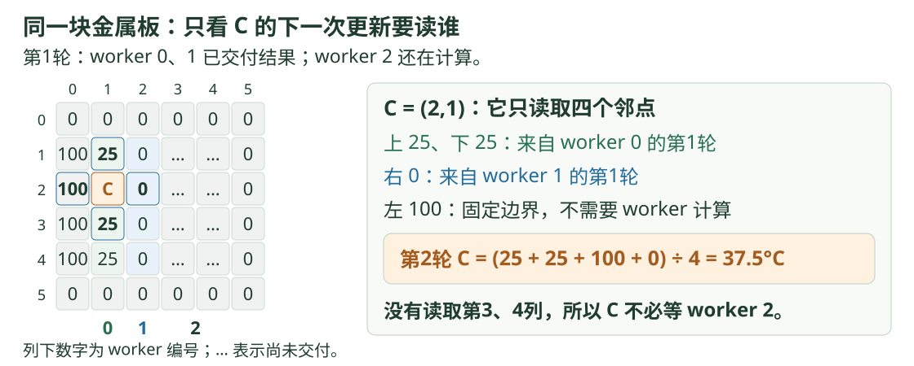
就 C 这一次更新而言，四邻数据已齐，不必等待最右边。 但要真正允许它提前开始，需要把统一交接改为明确的分区交接：
| 要保证什么 | 在这个例子中具体意味着什么 |
|---|---|
| 交付的是正确轮次 | worker 1 交付的是“第1轮的第2列”，不能只留下一个分不清轮次的“完成”标记 |
| 数据已经安全交接 | worker 0 收到同步通知后，才能读取 worker 1 写出的第1轮温度 |
| 旧值仍有人使用时不能覆盖 | C 的第2轮结果另存；第1轮温度要保留到所有依赖它的读取结束 |
这说明局部更新可能先开始，并不代表整块板已经完成：全板的最大平衡差与统一停止判断仍需相应的完整数据。若保留上一页“全局检查、统一交换”的协议，就仍要遵守它的屏障，不能直接删掉等待。
分配、粒度与长尾
从分组加法回来：任务数相同，工作量未必相同
依赖与交接规定了哪些任务可以开始。接下来假设任务已经彼此独立，只研究把它们交给谁，才能更早全部完成。
第一讲请几位同学对屏幕上的数字分组求和：分到同样多个数，不代表花同样多时间。程序中的任务也一样。
本部分固定 4 个同速 worker、16 项独立任务，先忽略派发和访存。每项成本 表示它单独完成所需的时间。
第一项是“全部工作平均摊开”的下界；第二项是“最长的一项不可拆”的下界。
例如 15 项成本为 1，最后一项成本为 16：总工作 31，平均分只要 7.75，但实际不可能短于 16。动态分配能安排它什么时候开始，不能自动把它变短。
提前分好，还是运行时领取？
第一讲已经看到：分工不均会让先完成的人等待。现在进一步比较怎样达到均衡：开始前分好，还是运行时再领取？
固定 4 个同速 worker、16 项独立任务：任务 0–7 各耗时 1，任务 8–15 各耗时 5，总工作量为 48。先将交互中的每次派发成本 h 设为 0；循环分配与动态领取都每次分 1 项。h 表示派发一块任务占用调度器的时间。
任务 0…15 的成本：1, 1, 1, 1, 1, 1, 1, 1, 5, 5, 5, 5, 5, 5, 5, 5
教学时间单位，4 个同速线程、任务不可拆、全部在 t=0 就绪。动态队列串行派发，每次用 h；忽略最终空取、启动、访存与真实硬件差异。静态分配成本在本图中忽略。空白与橙色不能仅凭本图解释成实机空闲周期。
| 分配方法 | 怎样决定归属 | 这个例子告诉我们什么 |
|---|---|---|
| 静态连续分块 | 开始前，每人拿连续 4 项 | 工作量为 [4,4,20,20]，T=20；前两人提前空闲 |
| 静态循环 | 开始前，依次轮流分给 worker 0、1、2、3 | 每人工作量为 12，T=12；提前排好，不需逐次领取 |
| 动态领取 | 运行中，谁先空闲，谁领下一项 | 忽略领取成本时也是 T=12；归属随执行情况决定 |
这里两种方法一样快，但原因不同。 静态循环恰好把长短任务搭配均匀；动态领取则让空闲者继续拿任务。动态领取的成本此时被设为零，实际选择还要考虑领取、排队与协调。
判断策略是否合适，还要看：任务的长短排列变了，原来的分配规则是否仍然有效？ 下一页保持 4 个 worker、16 项任务，换一种成本排列检验静态循环。
Q04 · 讨论
循环分配与动态领取在这里同样快，是否说明两种方法等价、以后随便选一个就可以？
Q04
不等价。若成本分布稳定，静态分配已能均衡，就不必为逐次领取增加协调；若成本难以预测或执行速度会变化，动态领取更有适应性，但要比较减少的等待能否抵消领取开销。一次理想算例中的 T=12，不能替代这些判断。
周期性成本：循环分配也可能失衡
上一页的静态循环恰好分得均匀。现在把任务成本改成 [8,1,1,1] 重复四次，仍是 16 项、4 个 worker，忽略派发开销，看看同一条分配规则会怎样。
| 方式 | 各 worker 拿到什么 | 工作量 / 完成时间 |
|---|---|---|
| 连续 4 项一组 | 每人都拿到完整的 [8,1,1,1] | [11,11,11,11]，T=11 |
| 逐项循环，i mod 4 | worker 0 恰好拿走所有 8 | [32,4,4,4]，T=32 |
| 每 4 项作为一块，再循环分配 | 每块又包含一个完整周期 | [11,11,11,11]，T=11 |
分散到各处，不代表工作更均匀。 当分配步长撞上任务成本的周期，重任务仍会集中到同一个 worker。
长短样本的排列、每行非零元素的数量、每个专家收到的输入量，都可能与下标存在规律；要看实际成本怎样分布。
另一种办法是先随机打乱任务编号，再均分或循环分配，以打破成本与下标的固定对应；但可能仍不均衡，也可能破坏数据局部性。随机打乱任务和后面随机选择窃取目标是两种不同操作。
动态领取：先完成的人，再拿下一份
前两页说明，静态规则是否均衡取决于任务成本怎样分布。如果事先不知道重任务在哪个位置，可以把归属推迟到执行时再决定；接下来具体看动态领取怎样工作、又付出什么成本。
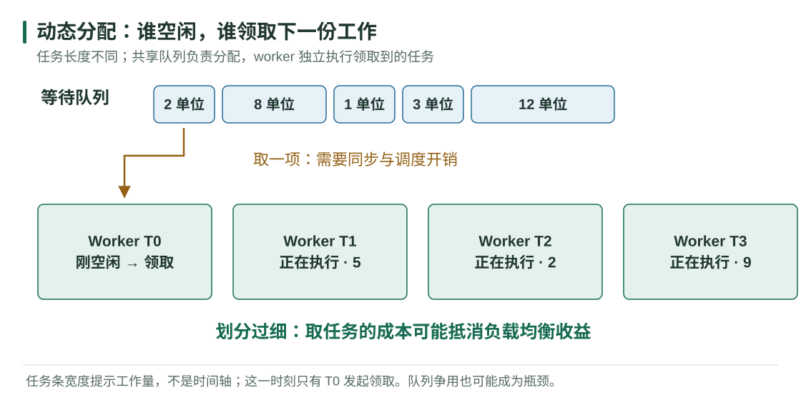
把就绪任务放进公共队列。worker 完成当前任务后，再取下一项，不需要预先猜到每项成本。
这能减少“某人还在做很长的一串，其他人已没事做”的情况，但同时带来两个问题：
- 领取不能重复。 队列或计数器需要正确的并发协议。
- 领取有成本。 任务太小，派发与争用可能超过真正计算；任务太大，尾部又难以分给别人。
因此要同时设计“怎样领取”和“一次领取多大一块”。
一次领三个：唯一编号怎样变成唯一输出
先解决“同一项不能被两个人重复领取”。换一个便于看清尾块的小例子：N=10 项，每次领取 g=3 项。共享编号初始为 0，每次不可分割地取走旧值，再加 3。
| 领取返回的旧值 begin | 负责的任务下标 | 为什么不重复 |
|---|---|---|
| 0 | 0、1、2 | 每次返回的起点相差 3 |
| 3 | 3、4、5 | 相邻区间首尾相接 |
| 6 | 6、7、8 | 最多只处理到 N−1 |
| 9 | 9 | 尾块不足 3 项，只做剩下的 1 项 |
| 12 及以后 | 无任务，退出 | begin 已超出范围 |
每个 worker 对领取到的 i 计算 out[i]，就有唯一输出拥有者。但编号先增长，计算后发生：不能用“编号已超过 N”判断全部结果完成，仍需等待所有执行者结束。
任务粒度：领得太细与领得太粗都会浪费
把连续 g 项组成一个任务块（chunk）；g 就是本页的粒度。回到前 8 项成本 1、后 8 项成本 5 的那组输入。
| 粒度 g | 需要领取的块数 | 每块的工作 | 新出现的限制 |
|---|---|---|---|
| 1 | 16 | 1 或 5 | 领取频繁 |
| 4 | 4 | 4、4、20、20 | 分配后再无剩余工作可借 |
| 8 | 2 | 8、40 | 4 个 worker 只有 2 个能拿到块 |
若每次派发要独占调度器 h 个时间单位，光派发就至少需要 。这只是一个下界，不能直接当作总时间；派发还可能与其他 worker 的计算重叠。
Q05 · 讨论
把 g 从 1 增到 8，队列操作减少了 8 倍，为什么程序仍可能变慢？
Q05
粒度变大让调度器省事，却把任务捆得无法重新分配。本例 g=8 时形成成本 8 与 40 的两个不可拆大块，最长块本身就需要 40，另外两个 worker 没有任务。减少一项开销，不代表关键路径缩短。
看时间线：领得更少，就一定更快吗？
仍是前 8 项轻、后 8 项重，4 个 worker；每次领取耗时 1。先播放 每次领 4 项，再切换为 2 项，观察橙色领取与绿色计算如何交错。
橙色：领取（每次 1） 绿色：计算 灰色框：尚未发生。每块计算量＝块内各项耗时之和。
4 个同速 worker；任务 0–7 各耗时 1，8–15 各耗时 5。按最早空闲者领取，同刻按编号；算完一块才能再领。教学模型，忽略启动、访存和最终空取成本。
看两个关键时刻： g=4 时，最后一块到 t=4 才开始，再算 20，结束于 24；g=2 时，worker 0 在 t=3 算完，却要等调度器到 t=4 空闲，第二次领完才能继续。
本例 g=2 最终在 18 完成。领取次数、等待和长尾要一起看；总时间取最后的完成时刻。
队列不能拆开长任务，但可以让它早点开始
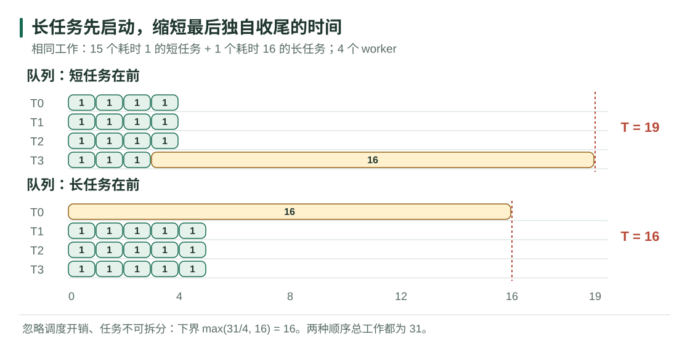
固定粒度之外，队列中的先后也会改变最晚完成时刻。回到 15 个短任务各用 1，最后一个长任务用 16，4 个 worker，忽略派发成本。
| 领取次序 | 长任务何时开始 | 整体完成时间 |
|---|---|---|
| 先进先出（FIFO，First In, First Out） | t=3 | 3+16=19 |
| 把长任务放在前面 | t=0；其余 15 项由另 3 人处理 | 16 |
T=16 已达到最长任务给出的下界。这里没有减少工作，只是减少了关键任务开始前的等待。
但任务成本可能未知，预测和排序也要时间；重排还可能改变缓存复用或输出顺序。先完成者可以先交付临时结果，最终顺序由原始任务编号恢复。
知道耗时，也不代表“长任务优先”必然给出最优分组。 换一个两人算例，5项独立任务耗时为 [3,3,2,2,2]：从长到短依次交给当前负载较轻的人，最终为 7 与 5；若分成 [3,3] 和 [2,2,2]，两人都只需 6。已知信息有价值，但仍要选对安排方式，并计入安排本身的成本。
执行者速度不同，就不该平均分工作
前面只改变任务成本，现在放松“worker 同速”的假设：有 120 单位可任意切分的工作，3 人速度分别为 1、2、3 单位/时间，暂不计通信。
| 分配 | worker 0 | worker 1 | worker 2 | 最后完成 |
|---|---|---|---|---|
| 平分为 40、40、40 | 40/1=40 | 40/2=20 | 40/3≈13.33 | 40 |
| 按速度分为 20、40、60 | 20/1=20 | 40/2=20 | 60/3=20 | 20 |
分给第 i 人的工作应与速度 成比例：。这样理想完成时间是 。
实际速度取决于当前任务与共享资源：跑 GEMM 快，不代表图遍历也同比例快。动态领取能适应部分变化，但要付派发和迁移成本。
任务不一定事先列好，也会在计算中产生
前面讨论了任务长短、粒度和 worker 速度，但任务清单都已提前给定。现在放开这个假设：有些工作，要先算一步，才知道后面有哪些任务。
例如排序 [8,3,7,1,5,9,2]。选 5 作为分界值，先把元素分到小于、等于、大于 5 的三段：
| 过程 | 出现了哪些可执行的工作？ |
|---|---|
| 先完成划分 | 得到左段 [3,1,2]、中间 [5]、右段 [8,7,9] |
| 左右段已经分开 | 两段占用不同位置，可以交给不同 worker 独立排序 |
| 两段都排好 | 得到 [1,2,3] + [5] + [7,8,9]，整段排序才完成 |
对左右子段继续采用同样的排序步骤，就是递归。这里值得关注的是：一个任务会产生新的子任务，子任务又有自己的完成条件。 并不是一开始就把所有任务平均分完。
这类组织方式称为 fork–join（分叉—汇合）：分叉时产生可独立执行的子任务；汇合时，两边都完成，原任务才算完成。任务可以很多，执行它们的 worker 仍然只有固定几个，不必每产生一个任务就新建线程。
小段通常直接顺序处理，避免拆分和调度比排序本身还贵；上面的短数组只用于看清流程。随后还有一个安排问题：新产生的任务都放进公共队列，还是先放在产生它的 worker 身边？
工作窃取：优先做本地，空闲时再借任务
上一页的问题是“新任务放在哪里”。工作窃取也是动态调度，与前面中央队列的区别在于任务的存放与领取方式：
| 对比 | 前面的动态中央队列 | 工作窃取 |
|---|---|---|
| 任务放哪里 | 一个公共队列 | 每个 worker 有自己的本地队列 |
| 做完一项后 | 回公共队列领取 | 优先继续做本地任务 |
| 自己没活时 | 仍去公共队列查找 | 去其他 worker 的队列取尚未执行的任务 |
| 主要取舍 | 管理直观，但多人频繁领取可能争用同一队列 | 减少集中领取、保留局部性，但窃取要同步，也可能带来数据迁移 |
工作窃取（work stealing） 常用双端队列（两端都可取放）：本地取较新的一端，空闲者尝试从别人较旧的一端取任务。图中换成编号 0–63 的 64 个元素，追踪尚未执行的区间 [32,63] 怎样被空闲者接走；不会抢走别人正在执行到一半的任务。
本地向深处做，往往能继续使用热数据；较旧的递归任务可能带来一整棵尚未展开的子树，借一次就有后续工作可做。图中被借走的区间是 [32,63]。
这是一种常见的调度策略，不保证最旧任务一定最长。队列只剩一项时，本地取出与远端窃取只能有一方成功；分散队列没有消除同步，也没有免费搬走数据。
去谁那里偷？随机选择为什么有用
本地队列空了，接下来去谁那里找任务？一种直觉是先查所有队列，选预计剩余工作最多的那个。但查询、估计、维护排名也要花时间，信息还可能已经过时。 多个空闲者若看到同一排名，还可能一起挤向同一队列。
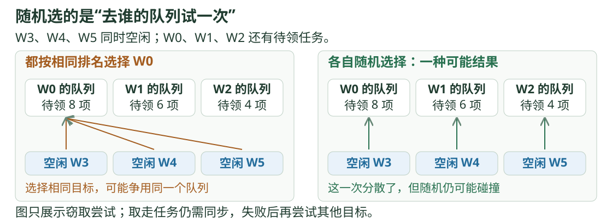
随机选择的做法是：空闲 worker 随机挑一个其他 worker，尝试从其队列取走尚未执行的任务；失败后再尝试。 本地优先执行、任务依赖和取出时的同步规则仍然保留，并不是把全部任务随便乱分。
| 随机选择带来什么 | 没有保证什么 |
|---|---|
| 不必先收集所有队列的精确负载 | 不保证选中最忙者，也可能选到空队列 |
| 独立选择可以分散竞争 | 不保证多个空闲者绝不碰撞 |
| 用较低的决策成本寻找可做的工作 | 不保证每次运行最快，也不消除数据移动成本 |
可靠而廉价的耗时信息仍值得利用。 但更精细的选择只有在省下的等待超过查询、同步和搬运成本时才划算。随机窃取是一种有效策略，不是所有工作负载的通用最优解。
空闲的 worker，要不要接手远处的数据
借走任务编号之后，所需数据未必也在身边。一个任务原地还要排队 10 ms，真正计算只需 4 ms。旁边有空闲 worker，但数据在原 worker 附近。
| 选择 | 等待 / 迁移 | 计算 | 从现在起完成所需时间 |
|---|---|---|---|
| 原地执行 | 排队 10 ms | 4 ms | 14 ms |
| 接手，迁移较便宜 | 搬数据 3 ms | 4 ms | 7 ms |
| 接手，迁移很贵 | 搬数据 12 ms | 4 ms | 16 ms |
“有人闲着”只提供了候选方案，减少空闲不是最终目标，更早完成才是。
任务编号很小，不代表任务需要的数据也很小。缓存是否温热、数据在哪个内存域或设备，都会改变这笔账。
工作分好了，数据怎么搬？
各算各的区域，为什么还要交换数据？
前面解决的是谁来算、各算多少。现在继续求金属板的稳态温度：即使每个 worker 分到同样多的网格点，计算也未必一样快，因为它还要拿到所需的数据。
这里采用双缓冲更新：读本轮旧温度，写下一轮新温度。各分区分别保存自己的数据。内部点只读本区；分界线旁的点还要读邻区的旧温度。 因此，分好计算任务之后，还需要交换边界数据。
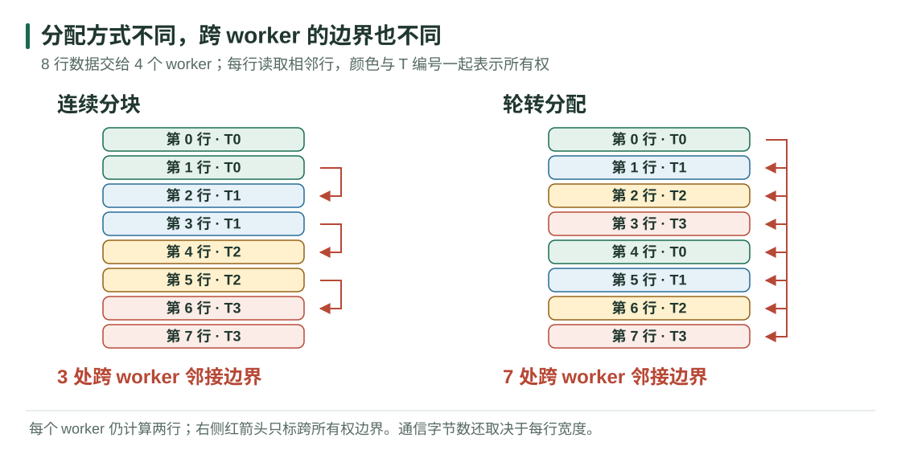
从相邻分区复制来的一圈边界副本，称为晕区（halo，也称 ghost cells / 幽灵单元）。副本要属于当前需要的那一轮，不能一直沿用旧数据。共享内存实现未必需要显式复制 halo，但跨区读取仍会产生访存流量。
这段内容沿着同一个网格，依次回答三个问题：切成什么形状 → 搬多少数据、花多久 → 等数据时能先算什么。 最后再看：为什么加人不总能加速，以及共享内存中是否也有数据移动的成本。
固定 64×64 网格与 16 人：比较横条和方块
先固定计算任务，只改变分区形状：64×64 个待计算点、16 个 worker，每人负责一个分区，只与相邻分区交换一层边界温度。
继续使用上下左右四邻温度更新；相邻分区交换一层边界值。这里先比较形状，下一页再数消息与字节。
横条方案每区 4×64，方块方案每区 16×16；两者都算 256 个点，工作量同样均衡。 外部物理边界由边界条件提供，不向外发送。
观察橙线：横条与邻区相接的边长，方块的边短、相邻方向却更多。面积相同，并不意味着交换数据的边界相同。
接下来把这些边界换成消息数和字节数，才有依据比较通信成本。
把通信量拆成三步：接口、方向、字节
沿用上一页的两种分区。温度用 FP32 存储，每值 4 B；每个相邻接口的每个方向打包发送一条消息。
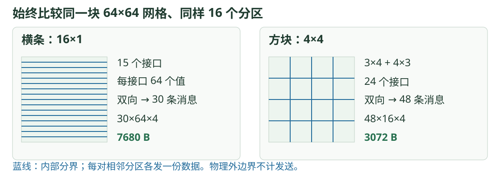
| 推导步骤 | 16 条横带 | 4×4 方块 |
|---|---|---|
| ① 内部接口 | 16−1=15 个 | 横向 3×4，加纵向 4×3，共 24 个 |
| ② 每接口双向发送 | 15×2=30 条消息 | 24×2=48 条消息 |
| ③ 消息长度 × 每值字节 | 30×64×4=7680 B | 48×16×4=3072 B |
方块少搬 7680−3072=4608 B，却多启动 48−30=18 条消息。“更少数据”与“更少通信事件”不是同一个目标。
消息更短但更多，最后哪一种更快
上一页数出了两笔账：方块少搬 4608 B，却多发 18 条消息。要判断谁快，必须把它们都换成时间。
每条消息先付一次启动成本，再花时间传数据。 先用一个简化模型：所有消息依次占用同一通信资源，不能并行或与计算重叠。
是通信时间，m 是消息条数，α 是每条启动时间，V 是总字节，β 是载荷带宽。固定 β=1024 B/μs，仍用上一页 64×64 网格。
| 每条启动时间 α | 横条：30α + 7680/1024 | 方块：48α + 3072/1024 |
|---|---|---|
| 0.1 μs | 3 + 7.5 = 10.5 μs | 4.8 + 3 = 7.8 μs |
| 1 μs | 30 + 7.5 = 37.5 μs | 48 + 3 = 51 μs |
方块更快要求：多出的启动成本小于节省的传输成本，即 。两者相等时 α=0.25 μs。
Q06 · 讨论
真实网络可同时传多条消息，还能与计算重叠，能否继续用全系统总字节除以一条链路带宽预测耗时？
Q06
不能直接这样预测。应找到实际的瓶颈链路或关键通信路径，考虑并发、争用、打包与重叠。这张表用于揭示消息启动与载荷的取舍；它的数值结论属于明确的串行模型。
通信在路上，先算不依赖它的内部区域
现在不改变分区，改一下执行顺序：一定要等所有邻区温度到齐，才能开始这一轮计算吗？
不必。仍采用双缓冲，内部点的上下左右旧值都在本区，可以先算；只有靠近分界线的点需要等待 halo。这正是把通信与计算重叠的机会。
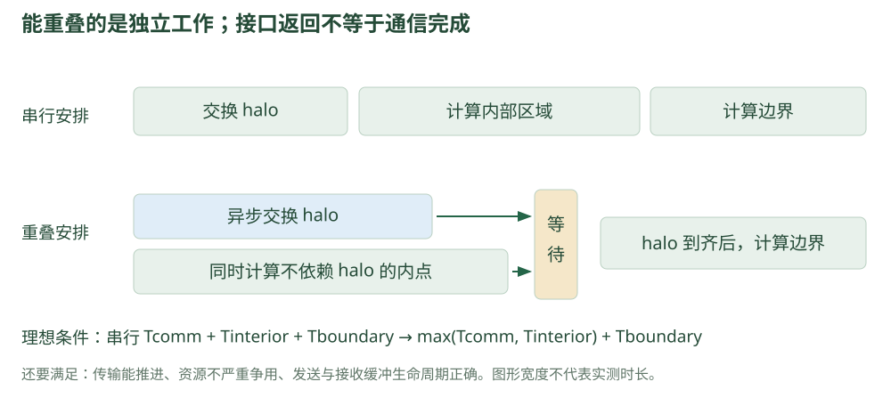
- 发起 halo 的接收与发送，保留发送数据。
- 先计算远离分区边缘、只依赖本地旧值的内部点。
- 收到所需 halo 后计算边缘；发送完成后才可覆盖发送缓冲。
这与第一讲流水线的想法相同：用有用的独立工作覆盖等待。消息传递接口（MPI，Message Passing Interface）的非阻塞操作允许这种安排，但不保证每个平台都能有效重叠。
能藏住多少通信，取决于剩下多少内部工作
上一页的方法能覆盖多少等待，取决于有多少工作不必等邻居。以四周都有邻区的 B×B 分区为例：去掉最外侧的一圈点，不等 halo 就能先算的内部还剩 (B−2)×(B−2)。
先看前面方块方案的 B=16，再与更大、更小的分区比较（这里改变局部分区大小，不是三种相同总工作量的测速结果）：
| 分区边长 B | 全部点数 B² | 不等 halo 的点数 (B−2)² | 内部占比 |
|---|---|---|---|
| 64 | 4096 | 3844 | 93.85% |
| 16 | 256 | 196 | 76.56% |
| 8 | 64 | 36 | 56.25% |
若通信与内部计算完全重叠、边缘计算在收到数据后才做，理想一轮耗时约为：
是通信时间， 是内部计算时间， 是边缘计算时间。
代入一个 16×16 分区算一轮。 假设平均每更新一个点用 1 μs，本分区所需的 halo 通信从发起到完成用 240 μs（教学假设，不是实测，也不是第37页全系统串行通信的时间）。
| 把工作拆开 | 点数 | 耗时 |
|---|---|---|
| 内部：不必等邻居 | (16−2)² = 196 | μs |
| 边缘：收到 halo 后再算 | 16²−196 = 60 | μs |
| 与邻居交换 halo | — | μs |
- 顺序执行：先通信，再算全部点，240 + 196 + 60 = 496 μs。
- 重叠执行：0–196 μs 边通信边算内部；196–240 μs 还要等 44 μs；240–300 μs 算边缘。总计 max(240, 196) + 60 = 300 μs。
省下的是被内部计算覆盖的 196 μs 等待；通信本身仍用 240 μs。 这里假设通信与计算互不拖慢，不可重叠的准备、打包等开销另计。
加人之后：更快算完，还是算更大的问题？
增加 worker 前，先分清目标：把同一个问题更快算完，还是处理更大的问题？ 两种比较都从16人增加到64人，但保持不变的量不同。
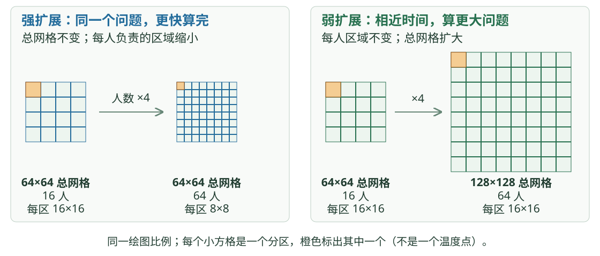
- 强扩展（strong scaling）：总网格仍为64×64，每人从256个点减到64个点。理想情况下耗时降到原来的 1/4；但每区可先算的内部点从196减到36，通信、同步等开销未必同比缩小，实际往往达不到。
- 弱扩展（weak scaling）：每人仍算16×16个点，总网格从64×64扩大到128×128，总工作量为原来的 4倍。理想情况下耗时基本不变；通信争用与全局同步仍可能让时间增长。
强扩展看“同一问题快了多少”，弱扩展看“问题随资源一起扩大，耗时能否保持”。 此处比较相同更新规则下的一轮计算；完整温度求解还要考虑达到同一收敛要求所需的轮数。
共享地址空间，也有“数据远近”
前面让分区显式交换温度，很容易看见数据在搬。现在把同一块金属板放进多插槽服务器的共享内存，线程能直接读邻区的数组，不用自己发消息，是否就没有数据远近之分了？
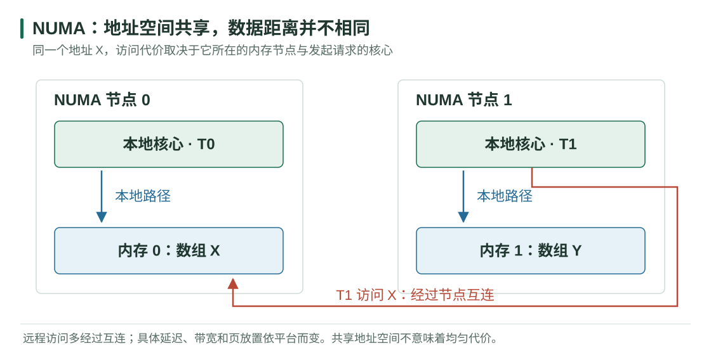
非均匀内存访问（NUMA，Non-Uniform Memory Access）：多个处理器共享地址空间，但访问本地内存与另一个处理器附近的内存，路径和代价不同。
例如，某个分区的温度数组位于处理器 A 附近的内存，却让处理器 B 上的核更新它：任务虽然分过去了，读取数组仍要经过处理器之间的互连。共享的是地址空间，访问路径并没有变成一样。
这也回扣前面的任务窃取：空闲核接手远处工作，可能省下排队，却增加远端访存。可以优先安排靠近数据的工作，必要时再跨域平衡负载；是否划算仍要比较总时间。
这一节的结论：好的分区要同时兼顾工作量均衡、数据位置，以及通信与计算的配合。
输出位置不确定，怎样组织并行写入？
每项都能独立判断，却不知道该写到哪里
到这里，网格与 GEMM 的输出位置都能事先指定。现在换一种常见情况：哪些输入会产生输出，要计算之后才知道。
筛选输入 [7,-2,0,5,-1,9,3,-4]，只留下正数，希望得到紧凑且保序的 [7,5,9,3]。
每项独立判断是否为正数很容易，这叫映射（map）。难点是：保留下来的数，应该写到输出的哪个位置？数组位置从0开始编号。
办法一：仍写在原位置。 7、5、9、3分别写到 out[0]、out[3]、out[5]、out[6]，输出变成 [7,空,空,5,空,9,3,空]，中间留下空洞。
办法二：按领取先后排位置。 设共享计数器 next=0；每个正数领取 next 指定的位置，再把 next 加1。
- 如果7和5同时读到 next=0，两者就可能都写 out[0]。因此“领取位置＋计数器加1”必须不可分割地完成。
- 正确使用原子操作后，没有写冲突，也不会留下空洞；但若9先领到位置0，输出可能是
[9,7,3,5]。不要求保序时，这种办法可以使用。
办法三：按原输入顺序定位置。 先数清自己在原输入中前面有几个正数：
| 要保留的数 | 在原输入中，它前面有哪些正数？ | 有几个？ | 应写的位置 |
|---|---|---|---|
| 7 | 无 | 0 | out[0] |
| 5 | 7 | 1 | out[1] |
| 9 | 7、5 | 2 | out[2] |
| 3 | 7、5、9 | 3 | out[3] |
即使9最先执行，它也固定写 out[2]，最终仍得到 [7,5,9,3]。 位置先算好，各项便能同时写入，不需要等前面的数写完。
两种办法都能把输出排紧凑；办法二按领取先后，办法三保持原输入顺序。 本例要求保序，因此采用办法三；下一页用前缀扫描计算这些位置。
前缀扫描：每个位置前面，累计了多少
筛选需要知道“我前面有多少项”。只求一个总数还不够，我们需要每个位置各自的累计数。 先用 [3,1,4,2] 对照归约与扫描；加法从0开始。
| 操作 | 每个位置表示什么 | 输出 |
|---|---|---|
| 归约（reduce） | 全部元素合并 | 10 |
| 包含式扫描（inclusive scan） | 从开头到当前位置，包含自己 | [3,4,8,10] |
| 独占式扫描（exclusive scan） | 当前位置之前，不含自己 | [0,3,4,8] |
回到上一页的筛选：7、5、9、3共4个正数。
- 总和求数量：把“保留记1、丢弃记0”的标志相加得到4，只知道需要4个输出位置。
- 前缀和定位置：分别数出7、5、9、3之前有0、1、2、3个正数，它们就分别写到 out[0]、out[1]、out[2]、out[3]。
总和告诉我们要留多少个位置，独占前缀和告诉每一项该占哪个位置。 “独占”就是不把自己算进去；9前面有两个正数，所以占第2号位置（从0编号）。
稳定筛选：标志 → 前缀 → 唯一地址
| 输入位置 i | 0 | 1 | 2 | 3 | 4 | 5 | 6 | 7 |
|---|---|---|---|---|---|---|---|---|
| x[i] | 7 | -2 | 0 | 5 | -1 | 9 | 3 | -4 |
| 标志 f[i] | 1 | 0 | 0 | 1 | 0 | 1 | 1 | 0 |
阶段间完成后再进入下一阶段；scan 使用可精确表示的小整数。动画展示算法数据流，浏览器自身不并行执行这些循环。上扫与下扫各 3 层，共 14 次加法，另有交换、根置零和同步成本。
- 标志 ：满足条件记 1，否则记 0。
- 前缀 ：第 i 项之前有几个 1。
- 仅当 时写
out[s[i]]=x[i]；否则不写。
以值 9 为例，它在输入位置 5，前面已经保留 7、5 两项，所以写 out[2]。最后一个前缀 4 加最后标志 0，得到输出长度 4。
Gather 与 scatter：索引决定读哪里，还是写哪里
上一页的 out[s[i]]=x[i]，就是散射写入（scatter）：每项输入带着目的地址写出去。反过来，如果每项输出带着来源地址去取数据，就是聚集读取（gather）。稍后 token 分组与结果还原会用到这两种操作。
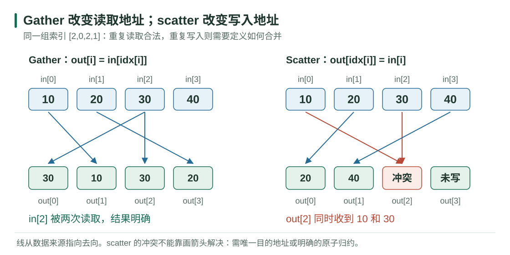
| 操作 | 索引控制什么 | 简单表达 |
|---|---|---|
| 聚集读取（gather） | 每个输出从哪里拿数据 | out[i] = data[index[i]] |
| 散射写入（scatter） | 每个输入往哪里放结果 | out[index[i]] = data[i] |
若 index=[2,0,2]：gather 是两次读取 data[2]；scatter 则有两个任务写 out[2]。后者需要唯一位置、原子归约，或其他定义清楚的冲突处理规则。
这也解释了稳定筛选为什么先做 scan：并行写出之前，先把地址竞争消掉。 这里假设输入输出存储不重叠。
并行 scan ①：跨1、2、4项，把前缀逐轮扩展
scan不必从左到右一个等一个。第一种方法 Hillis–Steele：每轮同时做加法，依次向左跨1、2、4项，让每个位置覆盖的输入范围逐轮扩大。
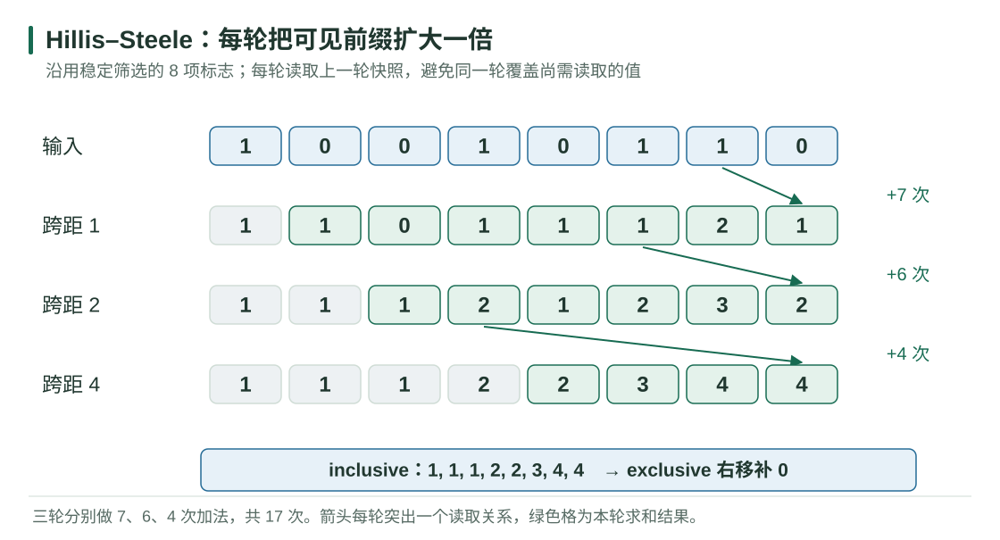
先看图中的三轮连线，再在动画中追踪一个位置。 沿用标志 [1,0,0,1,0,1,1,0]；每轮读取上一轮快照，不能读取同一轮刚更新的值。
输入：保留记1，丢弃记0 · 累计 0 次加法
各层所有连线保留；橙色实线追踪所选元素在已完成各层的来源，其余为虚线（后续层尚未执行）。竖线表示保留上一轮值；右移补0时位置0无需来源。步骤编号包含初始化或搬移，不等于加法层数；动画时长不代表运行耗时。
三轮分别做7、6、4次加法，共 17次加法、3个加法层。先得到含自己的累计数 [1,1,1,2,2,3,4,4]，再右移补0，得到独占前缀 [0,1,1,1,2,2,3,4]。
为什么可以分段合并？((a+b)+c)+d 可以改成 (a+b)+(c+d)，先分别算两对，再相加。结合律保证改变分组方式，结果不变。 本例用不溢出的整数计数；浮点加法因舍入，换树后结果可能略有差异。
这条等待链缩短了，但不同位置会重复计算部分区间。接下来看看，能否减少总加法次数。
并行 scan ②：先求各段总数，再分配各段起点
第二种方法 Blelloch 不让每个位置反复累加大区间，而是先保存各段总数，再把“这一段前面有多少”分下去。
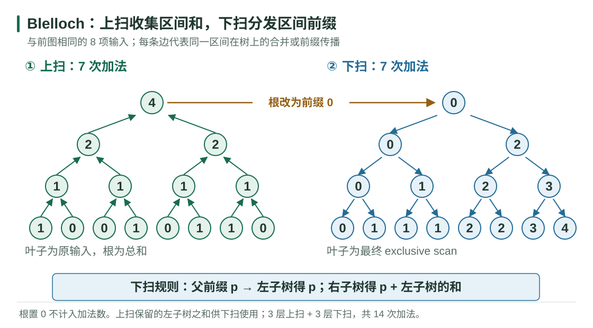
- 上扫求总数：先两两合并，再合并成4项、8项的段。
- 根置0：整段之前没有元素，所以整段起点为0。
- 下扫分起点：左半段直接接收父段起点；右半段起点＝父段起点＋左半段总数。
输入：保留记1，丢弃记0 · 累计 0 次加法
各阶段与最终输出的位置固定，完成数值保留；橙色标出当前阶段，同层计算可并行。步骤编号包含初始化或搬移，不等于加法层数；动画时长不代表运行耗时。
例如，前4项总数为2，整段起点为0，因此左半段从0开始，右半段从0+2=2开始。继续向下分，最终得到每一项的独占前缀 [0,1,1,1,2,2,3,4]。
| 对同一组8项输入 | 加法次数 | 加法层数 | 最后还要做什么 |
|---|---|---|---|
| 上一页：跨距离相加 | 7+6+4=17 | 3 | 右移补0 |
| 本页：上扫与下扫 | 7+7=14 | 3+3=6 | 已得到独占前缀 |
总工作更少，依赖层数却更多；不能仅凭层数判断谁更快。 根置0、搬移、访存与同步另计。接下来把8项的计数推广到N项，分别推导总工作和依赖层数。
两种 scan 的复杂度：总共算多少，要等多少层？
设 ，所以 。总加法量 W 要把所有位置的加法加起来；依赖层数 S 只数必须先后执行的轮次，同一层内可并行。
① Hillis–Steele：每轮跨距翻倍，但几乎所有位置都要算。
跨1、2、4……N/2项，共 轮；跨 项时，前 个位置保留原值，其余 个位置各加一次。
② Blelloch：上扫逐层减半，下扫逐层加倍。
上扫每层做 次加法。令 ，则 ；相减得 。直观上，N个数每合并两个就少一个，合成一个总和恰好要N−1次加法。
下扫每层做 次加法：每个父节点的左孩子直接接收起点，只有右孩子需要“父起点＋左段总数”，因此也为N−1次。
| 用8项核对 | 总加法量 W | 依赖层数 S |
|---|---|---|
| Hillis–Steele | 7+6+4 = 17 | 3 |
| Blelloch | (4+2+1)+(1+2+4) = 14 | 6 |
两者层数都写成 O(log N)，不表示层数相同：大O忽略常数2。 这里只数加法，右移、根置0、访存与同步另计；N不是2的幂时可补0至最近的2次幂，渐近阶不变。
两种 scan 怎么选：省工作，还是少等几层？
上一页算出了总工作和依赖层数。现在加入可同时做加法的资源数 P，看两种算法的优势如何变化。
先用一个只计加法的理想模型：P个执行单元，每个每拍做一次加法，同层做完再进入下一层。某层有q次加法，就需要 拍；总拍数把各层相加。忽略访存、同步、搬移和根置0的时间。
| 同样8项，改变资源数 | Hillis–Steele：逐层算拍数 | Blelloch：上扫＋下扫 | 模型中的结果 |
|---|---|---|---|
| P=1 | 7+6+4 = 17 | 2×(4+2+1) = 14 | Blelloch少做加法，占优 |
| P=2 | 4+3+2 = 9 | 2×(2+1+1) = 8 | Blelloch略占优 |
| P=8 | 1+1+1 = 3 | 2×(1+1+1) = 6 | Hillis–Steele少等几层，占优 |
- 数据量相对资源多：一层也要分多批执行，总工作量更重要。固定P、N增大时，Blelloch的线性工作量更有优势。
- 数据量小、资源足以覆盖一层：若P≥N，各层加法都能一拍完成，Hillis–Steele只需log₂N层，而Blelloch需2log₂N层；此时少几层更有利。
因此没有只由N决定的统一分界点。 实际GPU上还要看同步、数据交换与访存成本，不能把表中的“加法拍数”当作实测时间。大数组通常分块处理：局部小块可以重视层数，全局组织则要控制总工作量，下一页正是这种分层思路。
更大的 scan：局部前缀还差一个块偏移
如果数据被切成多块，各块可以先独立做 scan；难点是后面的块还不知道前面已经累计了多少。
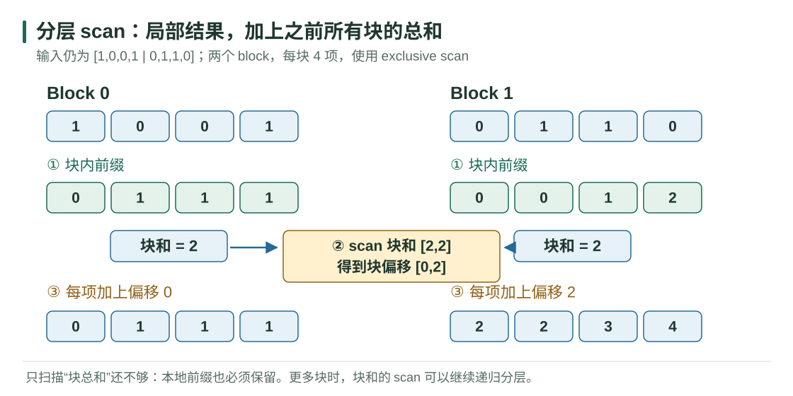
同一 8 项输入切成两块，每块 4 项：
| 步骤 | 前 4 项 | 后 4 项 |
|---|---|---|
| ① 块内独占前缀 | [0,1,1,1] | [0,0,1,2] |
| ② 块总和 | 2 | 2 |
| ③ 对块总和做独占 scan，得到块偏移 | 0 | 2 |
| ④ 局部前缀加块偏移 | [0,1,1,1] | [2,2,3,4] |
后半块不能从 0 重新计全局地址，因为前半块已保留 2 项。块总和很多时，上层还可继续分层；这个结构连接了局部计算、全局协调、独立回填。
直方图：分组之前，先知道每组有多少项
前面的筛选只分“保留、丢弃”。现在换成一个实际应用：混合专家模型（MoE，Mixture of Experts）把不同token交给不同的专家网络计算。 这里路由选择已经给定，只研究怎样组织数据，让同一专家批量处理自己的输入，再把结果送回。
接下来用同一组8个token走完：数各组数量 → 安排连续位置 → 专家计算 → 按原编号返回。 token编号表示输入身份，不是专家编号。
| token编号 | 0 | 1 | 2 | 3 | 4 | 5 | 6 | 7 |
|---|---|---|---|---|---|---|---|---|
| 交给哪个专家 | 2 | 0 | 2 | 1 | 0 | 2 | 1 | 1 |
第一步只数数量：每个专家需要留几个位置？
| 专家 | 接收的token编号 | 数量 |
|---|---|---|
| 0 | 1、4 | 2 |
| 1 | 3、6、7 | 3 |
| 2 | 0、2、5 | 3 |
得到计数表 count=[2,3,3]。这种“按类别数数量”的操作叫直方图（histogram）；每个类别的计数槽叫桶（bin），这里一个桶对应一个专家。
知道每组要留多少位置，下一步就可以用前缀和算出各组从哪里开始。此处先走通流程，计数时如何避免争用稍后再看。
数量已知，怎样把同一专家的输入排在一起
上一页得到专家0、1、2各有2、3、3个token。现在给它们划出连续区间：专家0占位置0–1，专家1占2–4，专家2占5–7。路由结果已经给定：token 0…7 的专家编号为 [2,0,2,1,0,2,1,1]。只研究分组与还原，不改变模型的路由选择。
| token i | 0 | 1 | 2 | 3 | 4 | 5 | 6 | 7 |
|---|---|---|---|---|---|---|---|---|
| 专家 e[i] | E2 | E0 | E2 | E1 | E0 | E2 | E1 | E1 |
只演示 top-1 路由，无丢弃、容量限制与跨设备通信。组内稳定编号本身也有计算成本；原子计数器能分配唯一位置，但不保证输入顺序。实际 MoE 可采用排序或专门的分组实现。
把刚才的工具连起来：直方图得到计数 [2,3,3] → 独占scan得到组起点 [0,2,5] → 加上组内序号 → scatter把token写入唯一位置。
是专家编号；offset 是该组起点；rank 是它前面属于同一专家的 token 个数，从 0 开始； 是重排后的唯一位置。例如专家 2 收到 token 0、2、5，三者的 rank 依次为 0、1、2。
组内序号也可以并行计算，并不是逐个排队编号。 以专家2为例，先把“属于专家2”记为1，再做前面学过的并行独占scan：
| token编号 | 0 | 1 | 2 | 3 | 4 | 5 | 6 | 7 |
|---|---|---|---|---|---|---|---|---|
| 专家编号 | 2 | 0 | 2 | 1 | 0 | 2 | 1 | 1 |
| 是否属于专家2 | 1 | 0 | 1 | 0 | 0 | 1 | 0 | 0 |
| 这行标志的独占前缀 | 0 | 1 | 1 | 2 | 2 | 2 | 3 | 3 |
| 仅专家2的token取作rank | 0 | — | 1 | — | — | 2 | — | — |
token 0、2、5得到rank 0、1、2，再各自加上专家2的起点5，就能并行写入位置5、6、7。其他专家也可用同样的方法求序号；前缀计算完成后，各token才能使用它确定写入地址。
这是便于理解的一种实现：不同专家的scan也能并行，但若有E个专家、N个token，即使用总工作量为O(N)的scan，逐专家扫描全部输入也会带来 O(EN) 的总工作，专家多时应考虑排序等其他分组方法。
若不要求组内保持原输入顺序，也可用每个专家的原子计数器领取唯一序号；但同一计数器存在争用，先领到的不一定是原来靠前的token。本页按输入顺序定义rank，采用前缀方法。
只追踪 token 5：去哪里，怎样回来
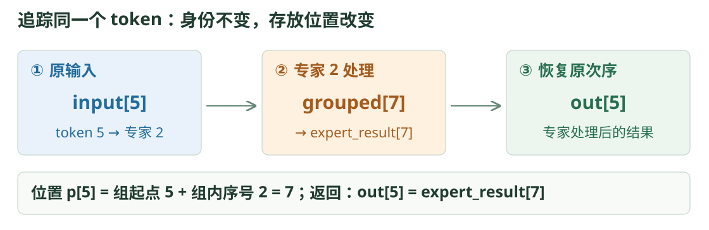
只追一个具体 token，把上一页的位置公式变成完整的数据来回。原始 token 5 发给 专家 2。在它前面，token 0、2 也选了专家 2，所以 rank=2；专家 2 的组起点是 5，重排位置为 p[5]=5+2=7。
| 阶段 | 对 token 5 做了什么 |
|---|---|
| 分组输入 | grouped[7] = input[5] |
| 专家计算 | 专家 2 处理所属区间，结果留在 expert_result[7] |
| 恢复次序 | out[5] = expert_result[7] |
整个分组顺序是 [t1,t4｜t3,t6,t7｜t0,t2,t5]。去程按目的地址 scatter；回程每个原始token按保存的位置 gather 自己的结果。返回的 out[5] 是专家处理后的向量，不是简单复制回原始输入。
Top-2：一个 token 去两处，回来后如何合并
前面每个 token 只选一个专家，称为 Top-1 路由。若模型要求一项输入交给两个专家，就增加了结果合并的问题。
Top-2 路由表示每个 token 选两个专家；T 个 token 因而产生 2T 条记录。每条记录用 (token_id, route_id) 标识。
为什么还需要权重？ 两个专家会各自产生一份结果，模型需要决定这两份结果分别乘多大的系数，再把它们相加；这个系数就是此处的路由权重。
权重从哪里来？ 模型中的路由器（router，也称门控模块）根据当前token的特征给专家打分，路由规则据此选择专家并计算合并权重。本页把这些选择和权重作为已知输入，只负责正确搬运和合并。
假设token 5选中专家0和专家2，并采用归一化后的权重0.7、0.3：表示两位专家的输出分别乘0.7、0.3，不是把token的计算量拆成70%和30%；两个专家都处理这份输入。这是本例的权重约定，不要求所有MoE实现都按相同方式归一化。
把专家编号、权重和路由记录对应保存：
(token 5, 路由 0, 权重 0.7) → 专家 0 → 临时结果 u
(token 5, 路由 1, 权重 0.3) → 专家 2 → 临时结果 v
一个最终拥有者读取两份结果：out[5] = 0.7 u + 0.3 v
例如某个分量上 u=10、v=20，合并结果就是 0.7×10+0.3×20=13。
分组时给每条记录分配唯一槽位；专家计算完成后，每个 token 的拥有者 gather 两份结果再加权合并，避免两个专家同时对最终输出做普通累加。
这里 u、v 都是同形状向量，公式对每个分量成立。把两份结果分别乘权重，再相加为一份输出，就是一次加权归约（weighted reduction）；不是scan，因为这里不需要每个前缀的结果。两条路由的位置映射必须与权重对应。
回看分组的第一步：计数时为什么会争用？
刚才走完了“分组 → 专家计算 → 结果返回”。现在依次检查这三段的成本，先回到第51页的直方图计数：[2,0,2,1,0,2,1,1] → count=[2,3,3]。
当时只算出了答案，没有解释多个执行者怎样同时更新计数表。这里补上这个实现问题：所有token一起计数，会不会争着修改同一个位置？ 继续用每个token只选一个专家的例子。
若共用 count=[0,0,0]，token 0、2、5都要给 count[2] 加1。原子加可以防止漏计，但这些更新仍需协调。大量线程集中修改同一位置，这个位置就叫热点；相互争用叫热点争用。 这里与温度无关，也不是说这个8项小例子已经有严重性能问题。
这与前面“先各算部分结果，再归约合并”是同一种方法。应用到计数上，就是分开数，最后合起来：由两个执行者分别顺序统计前4项和后4项，每人拥有自己的计数表。
| 谁来数 | 处理的token编号 | 对应专家编号 | 计数表：专家0、1、2 |
|---|---|---|---|
| 执行者A | 0、1、2、3 | [2,0,2,1] | [1,1,2] |
| 执行者B | 4、5、6、7 | [0,2,1,1] | [1,2,1] |
| 两人都完成后，按列相加 | — | — | [2,3,3] |
A、B更新不同的表，统计期间不争同一计数器。这叫私有化：本例是每个执行者各一份；如果多个线程共用一份“组内表”，组内更新仍需同步。
代价也很具体：从3个计数器变成6个，要初始化两份表，再做3次加法合并。一般有P份表、B个桶、每个计数器4 B时，局部表共占 4PB字节。减少争用是否值得，要看省下的等待能否抵过这些新增成本。
专家忙闲不均：怎样让其他设备帮忙？
上一页检查了分组计数的成本，现在检查专家计算：数据排好了，工作是否也分均匀了？ 继续用Top-1的8个token，每个只选一个专家，比较下面两种分布。
先作简化：3 个专家各有一份同速资源，各自在组内逐项处理，单 token 成本为 1，专家之间能同时执行。
| 同样 8 个 token | 专家 0 | 专家 1 | 专家 2 | 全部完成 |
|---|---|---|---|---|
| 原分布 | 2 | 3 | 3 | 3 |
| 偏斜分布 | 5 | 1 | 2 | 5 |
最忙专家给出完成时间的下界。理想资源利用率从 8/(3×3)≈88.9% 降到 8/(3×5)≈53.3%，虽然总工作未变。
能不能让空闲设备帮专家0算？可以，但要使用专家0的权重，不能随便改成专家1来算。 以推理为例，在设备B提前放一份专家0的相同权重副本，把它的5项工作拆成3项和2项：
| 同样3台设备、8项工作 | 设备A | 设备B | 设备C | 最后完成 |
|---|---|---|---|---|
| 原来一位专家对应一台设备 | 专家0：5项 | 专家1：1项 | 专家2：2项 | 5 |
| B额外保存专家0副本 | 专家0：3项 | 专家0副本：2项＋专家1：1项 | 专家2：2项 | 3 |
这叫专家复制与任务重分配。专家收到的逻辑任务仍是 [5,1,2]，设备实际承担的工作却变成 [3,3,2]；每个token仍只由一个选定专家的副本处理一次，再按原身份返回。
这里沿用单项耗时1的简化模型，且假设副本已就绪、忽略搬运。实际会多占显存，产生额外通信；若是训练，还要保持副本参数与梯度更新一致。因此可以缓解长尾，不能保证零成本地消除所有等待。
这正好连接前面的任务分配：分工可以调整，但接手者必须有正确的数据，迁移成本也必须值得。下一页看看这些基础思想怎样进入真实研究。
从负载均衡到MoE论文：基础思想怎样成为研究？
上一页的“让其他设备分担繁忙专家”不是只有课堂才用得到。实际研究常从一个熟悉的并行问题出发，再解决真实模型和硬件带来的新约束。
| 研究或系统 | 本课概念如何用上 | 它解决什么、没保证什么 |
|---|---|---|
| Lina · USENIX ATC 2023 | 根据专家选择规律动态调度推理资源，平衡设备间token传输量与通信带宽 | 处理专家热门程度不均引起的通信瓶颈；不是只把计算任务平均分配 |
| MegaBlocks · MLSys 2023 | 用分块稀疏计算适应各专家不同的输入数量 | 减少为凑齐形状而补空位的浪费，并避免丢弃token；不等于自动解决跨GPU长尾 |
| DeepSeek EPLB · 开源部署算法 | 复制高负载专家，再将专家副本安排到不同GPU，并考虑节点内的数据局部性 | 改善物理设备负载；仍需估计负载、支付副本显存与调整成本。它是部署实例，不是此处新增列举的独立论文 |
例如，上一页复制专家0之后，新的研究问题随之出现：负载会变，什么时候值得复制？复制到哪里？多占的显存和新增通信，会不会抵消收益？
可以沿着这条路线形成研究：发现真实瓶颈 → 提出针对性的调度或布局机制 → 实现 → 与已有方案比较完整性能和代价。 既要验证结果正确，也要测试不同负载、统计调整开销，并说明在哪些条件下不再有效。
基础并行概念可以成为论文的出发点；论文贡献在于解决了什么新的具体问题，并用证据说明为什么有效。 下一页把这些优化统一放回整层耗时，而不只盯住一个更快的kernel。
论文与实现：Lina · MegaBlocks · DeepSeek EPLB
复制专家后算得更快，为什么总时间反而可能增加？
回到第56页：专家任务是 [5,1,2]。设备B放一份专家0的副本后，设备负载变成 [3,3,2]，专家计算从5个时间单位缩短到3个。那里假设副本已就绪，没有计算搬运成本。
现在补上这笔账：若B还没有专家0的权重，就要先复制权重、准备存储，并把分给副本的token送到B。假设这些新增开销共需3个时间单位，且不能与本批计算重叠。
| 同一批8个token的处理步骤 | 原来：不复制 | 新方案：准备副本并分担任务 |
|---|---|---|
| 原有分组与输入发送 | 2 | 2 |
| 新增：副本准备与额外数据转发 | 0 | 3 |
| 专家计算，等最慢设备完成 | 5 | 3 |
| 结果返回并恢复原编号 | 1 | 1 |
| 完整时间 | 2+0+5+1=8 | 2+3+3+1=9 |
以上均为统一时间单位的假设算例，不是GPU实测；各阶段按顺序执行。原有发送包含在第一行，第二行只计新增部分，避免重复计费。
计算省了2，准备与转发多花3，所以整体反而慢了1。 判断优化是否值得，要比较完整过程，不能只看最慢设备从5降到了3。
副本能重复使用，结论会变吗？会。 权重不变、存储允许时，后续批次无需重新复制权重，一次性准备成本可以摊薄；但每批的额外转发仍需支付。这里将两项合计为3，没有分别给出数值，因此不能直接把后续开销视为0。
从分组到计算再到返回，始终问同一个问题：这次调整到底减少了多少等待，又新增了多少工作与数据移动？
本讲总结
本讲总结：把工作、数据和交接一起设计
| 容易混在一起的概念 | 必须区分的含义 |
|---|---|
| 每轮结果相同 / 最终稳态相同 | 波前与逐行每轮一致；红黑过程不同，本温度模型的最终稳态相同 |
| 没有竞争 / 符合算法要求 | 同批不互相读写，还要核对读取版本与共同验收标准 |
| 任务数均匀 / 时间均衡 | 等量任务可以有不同成本；worker 速度也可能不同 |
| 工作量 W / 关键路径 S | 少做工作不一定缩短最长依赖链 |
| 字节少 / 通信快 | 还取决于消息启动、并发与可重叠的工作 |
| 原子读改写 / 锁 / 屏障 | 一次更新、临界区、阶段交接，保护对象不同 |
| reduce / scan | 一个总结果 / 每个位置的前缀结果 |
| 局部算子快 / 完整过程快 | 分组、合并、搬运和恢复次序也属于成本 |
遇到新问题，可以依次说清：读哪一版数据 → 谁写哪一处结果 → 等哪些依赖 → 最后为何会更快。
下一讲将拆开这里用过的交接保证：缓存怎样协作，原子与锁怎样实现，内存顺序为什么重要。